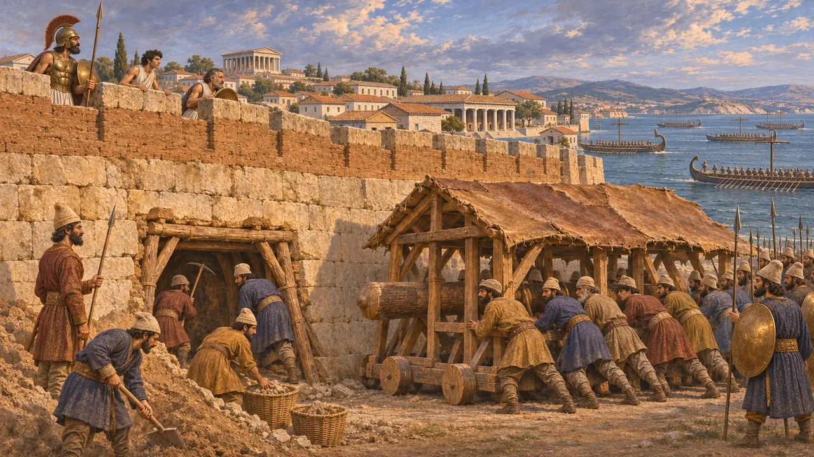
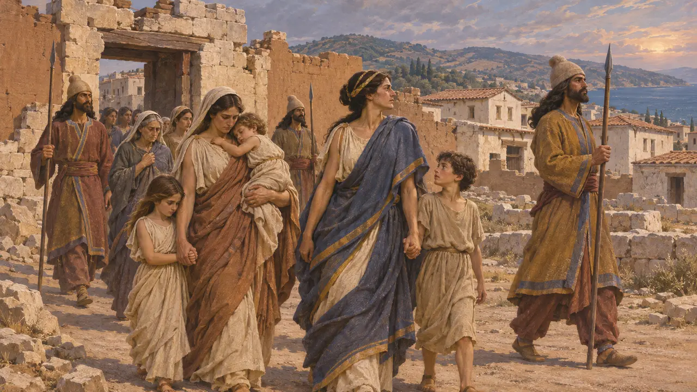
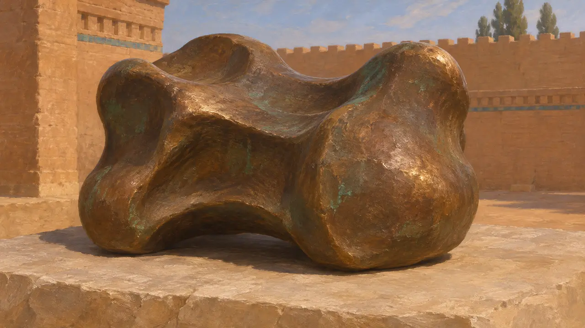
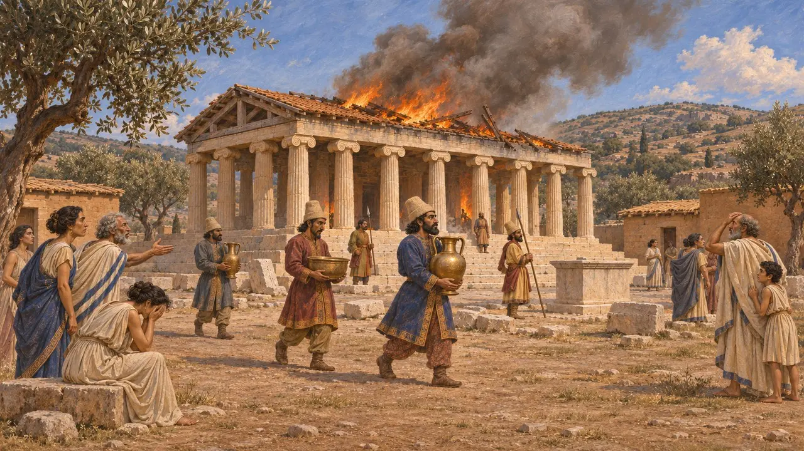
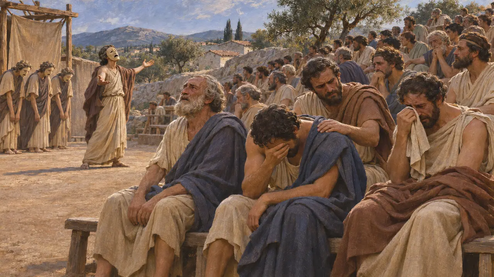

公元前494年,爱奥尼亚舰队在拉德溃散之后,波斯军队从陆海两路围攻米利都并将其攻陷。自公元前499年起,米利都一直是爱奥尼亚起义的领头者。希罗多德把它的陷落视为这场起义的致命一击:城中多数男子被杀,妇女儿童沦为奴隶,幸存者被迁往亚洲腹地。
游戏中： 游戏按希罗多德的说法,呈现了一场靠挖地道攻下的围城战。游戏做了简化:他说的是大多数人而非全部被杀,而且叛乱并未立即平息,因为波斯在公元前493年仍在夺回诸岛和赫勒斯滂。

水陆围攻
古代记述希罗多德说,爱奥尼亚舰队在拉德溃散之后,波斯将领从陆上和海上逼近米利都。他们在城墙下挖掘地道,并运来各式攻城器械。他们在阿里斯塔哥拉斯发动叛乱后的第六年攻陷了这座城市。希罗多德没有给出围城军队的人数,也没有说出最后一次攻城的波斯指挥官是谁。
Herodotus 6.18

死亡、奴役与流放
古代记述希罗多德说,被他描述为长发的波斯人杀死了大部分米利都男子,并把妇女和孩子变为奴隶。俘虏被带往苏萨。大流士没有再加害他们,而是把他们安置在安佩,那里位于波斯湾畔,靠近底格里斯河口。波斯人把这座城市及其平原留给自己,把山区交给了来自佩达萨的卡里亚人。
Herodotus 6.19-20

苏萨出土的青铜距骨
见于史载法国考古队在苏萨发现一枚形似羊距骨的大型青铜砝码，现藏卢浮宫。其上的希腊文铭文记录了对阿波罗的献祭，多数学者认为它是从阿波罗在迪迪玛的圣所掠来的。若真如此，这便是希罗多德所述劫掠的一件罕见实物遗痕。铭文本身并未说明砝码是何时、被何人带走的。
Bronze astragal from the Susa excavations (J. de Morgan), Louvre

迪迪马焚毁之时,以及米利都何等空荡
争夺中希罗多德把迪迪玛神庙被劫掠焚毁一事系于公元前494年。斯特拉波却说焚毁神庙的是薛西斯,因为布兰基代祭司们交出了神庙的财宝,并随他前往东方。考古发掘者在米利都发现了毁坏的痕迹,然而希罗多德又说,为波斯人效力的米利都人在公元前479年的米卡勒倒戈相向。这座城市大概并没有被彻底洗空。
Herodotus 6.19; Strabo, Geography 14.1.5; Herodotus 9.99, 9.104

雅典舞台上的米利都陷落
古代记述希罗多德说,雅典人闻讯后悲痛至深。诗人弗律尼科斯上演悲剧《米利都的陷落》时,观众痛哭失声。雅典人随后罚了他1000德拉克马,因为他让众人想起了一场与他们切身相关的灾难,并且禁止任何人再演这出戏。
Herodotus 6.21
来源
- Herodotus, Histories 6.18-21
- Strabo, Geography 14.1.5
- P. Briant, From Cyrus to Alexander, 2002
- A. Greaves, Miletos: A History, 2002
- O. Murray, 'The Ionian Revolt', Cambridge Ancient History IV, 1988